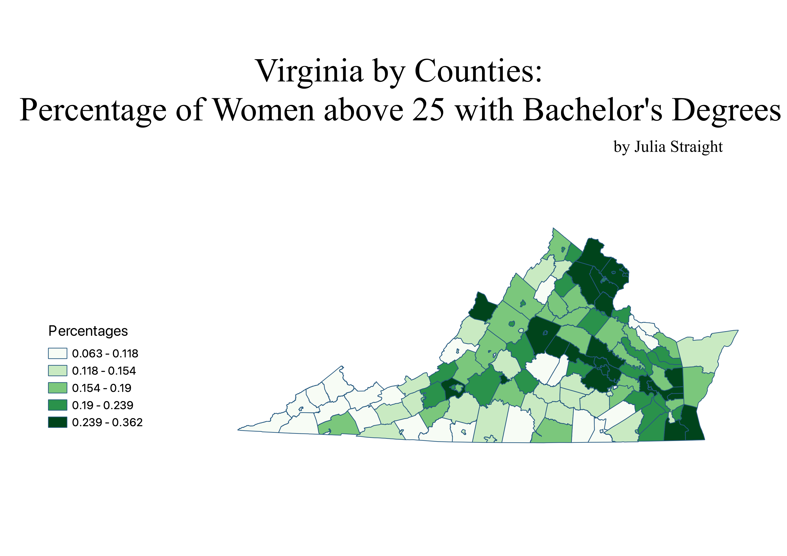

Homework 6: Census data choropleth
Julia Straight
This map depicts the percentage of women above 25 in Virginia who have completed a Bachelor's degree by county. The darker green counties have a higher percentage of women with bachelor's degrees, and the lighter green counties have a lower percentage of women with bachelor's degrees. The counties in Northern Virginia outside of D.C. are all dark green, and there is also a cluster of dark green counties around Richmond. The south and south-west edges of Virginia are largely lighter green.

Data used for this project
CSV dataset
Link to geojson